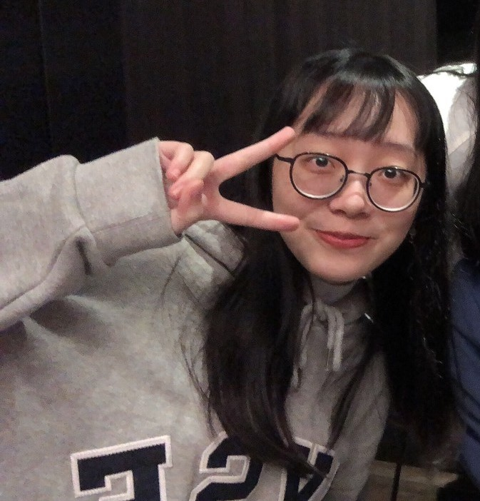

<!-- <!DOCTYPE html>
<html lang="en">

<head>
    <meta charset="zh-Hant">
    <meta http-equiv="X-UA-Compatible" content="IE=edge">
    <meta name="viewport" content="width=device-width, initial-scale=1.0">
    <title>輔仁大學與系所簡介</title>
    <link rel="icon" type="image/jpg" href="./img-fju/fjulogo.jpg" />
    <link rel="stylesheet" href="https://fonts.google.com/noto/specimen/Noto+Sans+TC">
    <link rel="stylesheet" type="text/css" href="style.css">
    <link rel="stylesheet" type="text/css" href="author.css">
    <link href="https://cdn.jsdelivr.net/npm/bootstrap@5.0.0/dist/css/bootstrap.min.css" rel="stylesheet"
        integrity="sha384-wEmeIV1mKuiNpC+IOBjI7aAzPcEZeedi5yW5f2yOq55WWLwNGmvvx4Um1vskeMj0" crossorigin="anonymous">
    <meta name="description" content="本網頁簡介輔仁大學與醫資系所的歷史沿革">
</head>

<body>
    <header>
        <h1>天主教輔仁大學介紹</h1>
        <h3>在台復校60周年 歷史回顧</h3>
    </header>
    <nav>
        <ul>
            <li><a href="index.html">首頁</a></li>
            <li><a href="./history.html">歷史沿革</a></li>
            <li><a href="./location.html">交通位置</a></li>
            <li><a href="./miia.html">醫資系所簡介</a></li>
            <li><a href="./author.html">關於作者</a></li>
        </ul>
    </nav>
    <div class="container">
        <main class="row">
            <section class="left col-12 col-lg-8">
                <h4>學習歷程</h4>
                <ul>
                    <li class="title">2020年9月 ~ 2021年6月 輔大三年級</li>
                    <p>專題、物聯網、醫學影像分析、決策分析、PowerBI</p>
                    <ol class="contant">
                        <li>專題-與使用者討論出完善需求分析，繪製詳細的UML圖，以輔助後續系統開發。這個系統開發技術包含網頁前後端，app開發和資料庫，目前系統已完成前後端連接功能大致完善，我負責app簡易UI設計，Android
                            Studio打卡功能研究，網頁後端PHP的撰寫，以及後端API串接，以及成果專題書撰寫。</li>
                        <li>物聯網- Arduino板、感應器的實際操作，做LED燈，蜂鳴器，紅外線感測器等感應器的搭配應用。</li>
                        <li>醫學影像分析-使用MatLab做醫學影像分析 ，將原始的骨肉瘤照片，經過影像分析後，凸顯腫瘤的位置，協助醫療上的判斷。</li>
                        <li>決策分析-使用TensorFlow建立「模型」，評估機器分辨圖片上「狗」與「貓」的模型準確性。</li>
                        <li>PowerBI-匯入在excel整理好的PM2.5的資料進入PowerBI，利用資料視覺化清楚觀看各縣市的空汙程度。</li>
                    </ol>

                    <li class="title">2019年9月 ~ 2020年6月 輔大二年級</li>
                    <p>Android Studio、資料庫、人機介面</p>
                    <ol>
                        <li>資料庫-使用 Oracle SQL Developer和Visual Studio實作飲料店的後台資料庫，具備增刪改查功能 </li>
                        <li>人機介面-使用PhotoShop進行Podcast app的UI介面設計</li>
                    </ol>

                    <li class="title">2018年9月 ~ 2019年6月 輔大一年級</li>
                    <p>JAVA、WEB、金鑰加密</p>
                    <ol>
                        <li>WEB-在github上架設自己的靜態網站。PWA進行天氣卡的實作。</li>
                        <li>金鑰加密-在Linux 中使用 OpenSSL 加密檔案，保護機密資料。也擔任助教，教導同學相關操作。</li>
                    </ol>
                </ul>
                <h4>經歷</h4>
                <ul>
                    <li class="title">2018年10月 ~ 2021年5月 同舟共濟服務社 營隊營長</li>
                    <ol class="contant">
                        <li>規劃安排營隊核心主題和課程重點，撰寫完整營隊企劃，爭取到比往年更多單位的贊助。</li>
                        <li>對外和各基金會、服務單位、社團畢業學長姊、指導老師接洽，蒐集各項資源、資訊、經驗，使營隊能有更好的呈現。</li>
                        <li>對內營造輕鬆愉悅又不失紀律的團隊氣氛，提醒隊員出隊服務的服務員心態，要以身作則，做好模範。</li>
                        <li>參與志工培訓，學習如何服務，也在服務中用心感受、持續成長和學習。</li>
                        <li>曾經遇到籌備為期一學期的營隊，因為疫情臨時取消，面對這樣的突發狀況，調適自己的心態，也關心安撫隊員的感受，冷靜正向的做事後的安排和調整。</li>
                    </ol>
                </ul>
                <div id="imgFJU"></div>
                <div><a class="btn btn-outline-primary" href="https://www.facebook.com/FJUSameBoat/" role="button">
                        <svg xmlns="http://www.w3.org/2000/svg" width="16" height="16" fill="currentColor"
                            class="bi bi-facebook" viewBox="0 0 16 16">
                            <path
                                d="M16 8.049c0-4.446-3.582-8.05-8-8.05C3.58 0-.002 3.603-.002 8.05c0 4.017 2.926 7.347 6.75 7.951v-5.625h-2.03V8.05H6.75V6.275c0-2.017 1.195-3.131 3.022-3.131.876 0 1.791.157 1.791.157v1.98h-1.009c-.993 0-1.303.621-1.303 1.258v1.51h2.218l-.354 2.326H9.25V16c3.824-.604 6.75-3.934 6.75-7.951z" />
                        </svg>同舟共濟服務社facebook
                    </a></div>
            </section>
            <section class="right col-12 col-lg-4">
                <h4>作者檔案</h4>
                <div id="imgFJU"></div>
                <h6><b>SHENG-CHING HUANG</b></h6>
                <p>
                    ----具備程式實作經驗 :
                    網頁前端後端、資料庫、軟體開發等。積極主動學習其他技能，像TensorFlow神經網路和PowerBI的資料視覺化。也在專題開發軟體的過程中，培養出自己解決問題和自學的能力，上網找尋相關資訊，借閱書籍閱讀實作，和其他人進行討論學習。除了課堂專題分組外，在社團中，也有許多與人開會合作討論的機會，因此團隊合作和溝通互動是我生活日常的一部分。執行時間安排規劃清晰，能在課業和社團兼顧，也取得平衡。
                </p>
                <p>
                    ----心靈成長的學習 : 是自己在大學三年持續進行的學習，多認識自己，欣賞自己，面對困境，正視困境，體驗生活，專注當下。也能在遇到事務繁忙時，做心態上的調適。討論意見分歧時，冷靜做溝通。
                </p>
                <p>
                    ----服務學習保有熱忱 : 大學三年持續在社團中推動舉辦偏鄉營隊教育。
                </p>
            </section>
        </main>
    </div>
    <script src="https://cdn.jsdelivr.net/npm/bootstrap@5.0.0/dist/js/bootstrap.bundle.min.js"
        integrity="sha384-p34f1UUtsS3wqzfto5wAAmdvj+osOnFyQFpp4Ua3gs/ZVWx6oOypYoCJhGGScy+8"
        crossorigin="anonymous"></script>
</body>

</html> -->